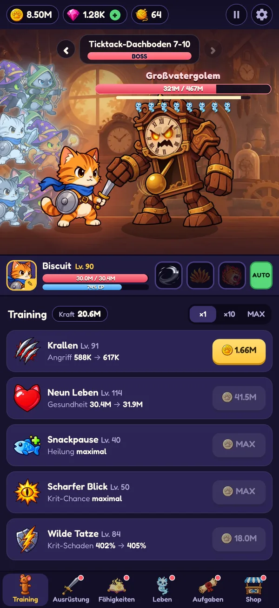
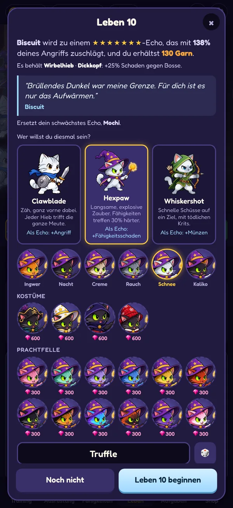
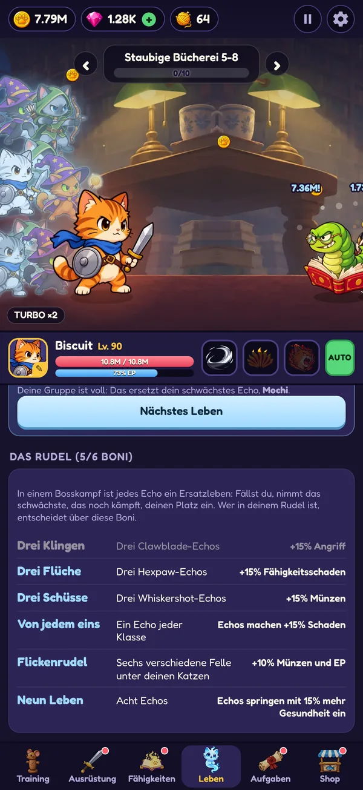
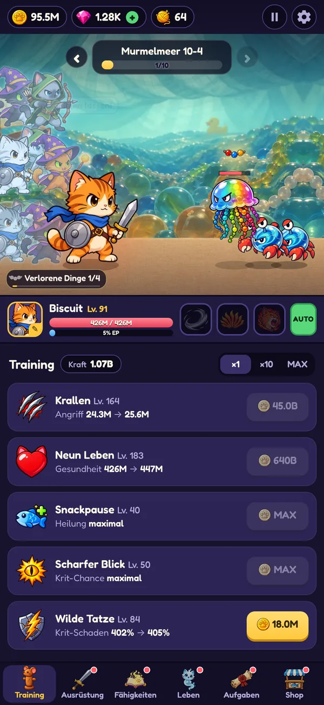
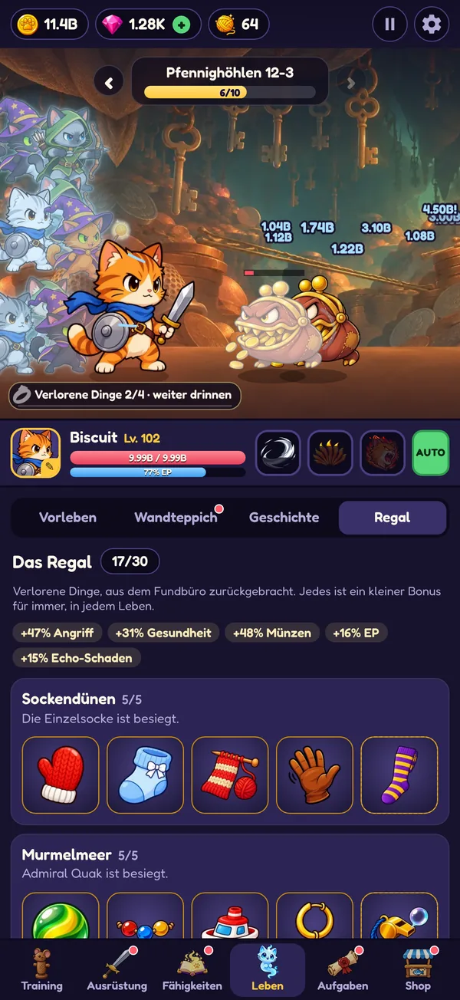
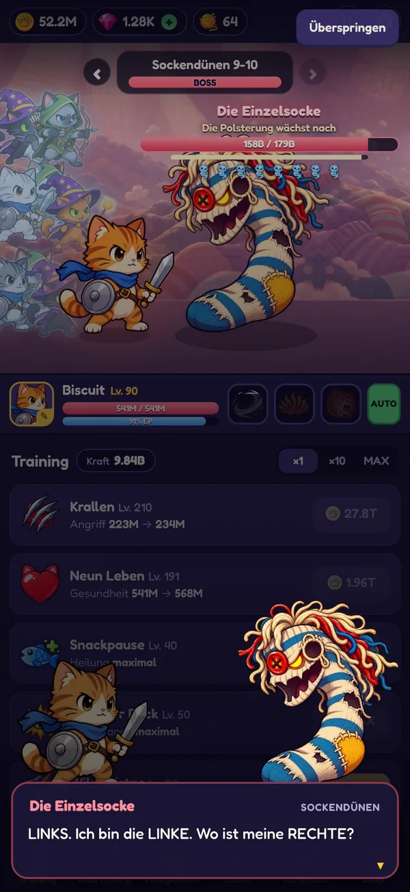

Pawst Lives
Das Idle-RPG, in dem deine Gruppe deine eigenen früheren Leben sind.
Eine Katze hat neun Leben. Deine kämpfen alle zugleich. Wenn ein Leben so weit gekommen ist, wie es kann, beginnst du das nächste, und die Katze, die du warst, kehrt als Echo zurück: ein Geist, der von da an an deiner Seite kämpft.
Laden im App Store: kostenlosFür iPhone und iPad. Keine Werbung. Kein Konto. Läuft offline.

Neun Katzen. Ein Held. Alle deine.
Wenn das Licht ausgeht, wird das Haus zum Dungeon. Der Rasensprenger ist eine Hydra. Der Toaster ist ein Drache. Und irgendwo im Dunkeln unter der Treppe wartet der Staubsauger.
Lebe ein Leben
Spiele als Clawblade, Hexpaw oder Whiskershot. Deine Katze kämpft von allein, während du sie trainierst, ihr anlegst, was sie findet, und ihre Fähigkeiten im richtigen Moment einsetzt.
Beende es gut
Wenn ein Boss nicht fällt, beginne dein nächstes Leben. Je weiter das alte kam, desto stärker ist das Echo, das es hinterlässt.
Kämpfe neben deinen Geistern
Bis zu acht Echos schließen sich dir an, und jedes behält die Fähigkeit, die es am meisten trainiert hat. Besiegt dich ein Boss, springt ein Echo für dich ein: Jedes ist ein Ersatzleben.
So sieht es aus
Jedes Bild zeigt das Spiel so, wie es auf einem iPhone läuft. Auf einem iPad ist es dasselbe Spiel, bildschirmfüllend.






Idle, wenn du willst, und selbst am Drücker, wenn nicht
Es spielt sich von allein, wenn du keine Zeit hast, und belohnt dich, wenn du welche hast.
Ein Spukhaus
Acht Räume, vom Gartentor bis ins Brüllende Dunkel, jeder mit eigenen Monstern und eigenem Boss. Dosenkrabben. Sockenkobolde. Eine Waschmaschine mit Tentakeln.
Immer etwas zu verbessern
Trainiere fünf Werte, steigere drei Fähigkeiten pro Klasse, verstärke vier Ausrüstungsplätze und webe Verbesserungen in den Wandteppich, die nie zurückgesetzt werden.
Bilde ein Rudel
Boni für drei Echos derselben Klasse, eines von jeder Klasse, sechs verschiedene Felle oder alle acht.
Nickerchen statt Pflichten
Gehst du weg, machen deine Katzen ein Nickerchen. Bei der Rückkehr warten ein paar Münzen und eine ausgeruhte Katze, die eine Weile das Doppelte verdient.
Tippen, abpassen oder laufen lassen
Spring einen Gegner an, heb dir eine Fähigkeit für den richtigen Moment auf oder lass alles automatisch laufen.
Jeden Tag etwas geschenkt
Tägliche Aufgaben, Erfolge fürs Leben und ein tägliches Geschenk, alle mit Edelsteinen, die du nie kaufen musst.
Fair und ruhig
Von einer einzelnen Person gemacht, die ein Spiel wollte, das dich in Ruhe lässt.
- Keine Werbung
- Kein Konto
- Kein Tracking
- Läuft offline
Über dich wird nichts gesammelt: Die Angaben zum App-Datenschutz im App Store besagen, dass keine Daten erfasst werden, und die Datenschutzerklärung (auf Englisch) ist eine Seite lang. Das Spiel ist kostenlos, mit sechs optionalen Käufen (Edelsteine und zwei einmalige Verbesserungen, die für immer gelten) und ohne Abos. Nichts im Spiel setzt sie voraus, und nichts, was du kaufst, ist Glückssache: Es gibt keine Lootboxen.
iPad, fünf weitere Sprachen und kein Zufall mehr im Shop
- iPad. Das ganze Spiel, bildschirmfüllend.
- Dein Spielstand kommt mit. Er liegt in deiner eigenen iCloud und auf deinem Gerät, sodass ein neues iPhone oder ein iPad deine Katzen dort findet, wo du sie gelassen hast. Weiterhin ohne Konto.
- Deutsch, Spanisch, Portugiesisch (Brasilien), Französisch und Japanisch. Das ganze Spiel samt Geschichte. Es folgt der Sprache deines Geräts, und in den Einstellungen gibt es eine Karte „Sprache“, falls du lieber in einer anderen spielst.
- Keine Lootboxen. Die Ausrüstungstruhe überlässt nichts mehr dem Zufall: Sie zeigt dir ihre vier Ausrüstungsteile, und du suchst dir eines aus.
- Erinnerungen, wenn du möchtest. Aus, bis du sie einschaltest.
Fragen
Ist Pawst Lives kostenlos?
Ja. Der Download ist kostenlos, und du kannst es bis zum Ende spielen, ohne zu bezahlen. Es gibt sechs optionale In-App-Käufe: vier Edelsteinpakete und zwei einmalige Verbesserungen, die für immer gelten. Es gibt keine Abos.
Gibt es Werbung?
Nein. Es gibt keinerlei Werbung, und es gab nie welche.
Kann ich offline spielen?
Ja. Das ganze Spiel läuft ohne Verbindung. Wenn du online bist, prüfen die täglichen Belohnungen das echte Datum.
Was ist ein Idle-RPG?
Ein Rollenspiel, das von allein weiterläuft. In Pawst Lives kämpfen deine Katzen selbstständig; du entscheidest, was du trainierst, was sie tragen, wann eine Fähigkeit zum Einsatz kommt und wann ein Leben weit genug gekommen ist, um das nächste zu beginnen.
Brauche ich ein Konto? Was wird gesammelt?
Kein Konto und keine Anmeldung, und das Spiel sammelt nichts über dich. Siehe die Datenschutzerklärung (auf Englisch).
Gibt es das Spiel für iPad oder Android?
Es läuft auf iPhone und iPad, und ein Spielstand in deiner iCloud wandert zwischen beiden. Eine Android-Version gibt es nicht.
In welchen Sprachen gibt es das Spiel?
Deutsch, Englisch, Spanisch, Portugiesisch (Brasilien), Französisch und Japanisch. Das Spiel folgt der Sprache deines Geräts, und in den Einstellungen gibt es eine Karte „Sprache“, um eine andere zu wählen.
Etwas funktioniert nicht. Wo bekomme ich Hilfe?
Die Hilfeseite (auf Englisch) behandelt Spielstände, Käufe und hartnäckige Bosse und nennt eine Adresse, an die du schreiben kannst.